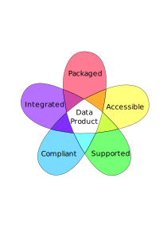

Data Products¶
What is a Data Product? - Definition by property¶
It is convenient to define some unit of organisation to shape our activities and thoughts around data.
Enter the concept of a “data product”.
A product is some kind of refined object or material that has been packaged for use. We might have some shared expectations around its provenance, quality and lineage - we’d expect it to be legal and compliant with local regulations, and we’d want to be able to access it from some kind of distribution channel available to the user. If something goes wrong, we need to be able to communicate with someone who has responsibility for the product, either to make it good, or to help develop the product so it’s more in keeping with our needs.
Products share all of these attributes, as illustrated below:

Packaged¶
When confronted with a product’s packaging, we are reassured when we see constituent ingredients making up the product, along with assurances about those ingredient’s lineage and quality. We see statements describing the product, how big it is, how many wheels it has, maybe additonal documentation around different use-cases, instructions even. Information about who to contact if a problem is found. All this information is meta-data about the product that is used when the product is being selected, or considered for inclusion in some plan or design.
For data products, expected packaging artefacts might include:
Schema definition / ERD - what entities and attributes constitute this model - a business definition Dataset profile perhaps including Data Quality results Lineage - source datasets and process used to compile the product Statements about the product’s availability, refresh frequency, coverage, exceptions and interpretation.
Accessible¶
When selecting a product, it can be beneficial to browse some kind of catalogue or brocure to help conveniently identify what products are available and match those to our specific need. This saves time and helps make more effective our accessing the product from whatever distribution channel it is available. We might need to understand what access requirements we may need to fulfill in order to gain access to the product.
For data products, this might include:
Published metadata (a searchable subset of the content available under the “packaged” banner) in some form of searchable Data Catalogue Clearly published access-control expectations/requirements Multi-channel availability - the same data product might be made available over API for some operational use cases, or more broadly as a hosted dataset, file or database for analytical use-cases. Ability to access a sample of the data (curated to meet appropriate security/confidentiality standards, but enough to give a representative example of what the dataset contains)
Integrated¶
If we are building some aggregated system from sub-components, its important that all those components follow similar standards. A packet of bolts with metric specifications is only useful if the rest of the components you’re using to construct your design also uses metric nuts, threads and tooling. An integrated product is one that has had thought and attention spent on considering the contextural and operational use-cases that the product is likely to find itself a participant, and to adopt any common standards that might be adopted in those contexts.
Data products must also be inter-operable and composable with other data products or standard datasets in order for them to be more readily and usefully employed.
As such, it’s important to be able to communicate what standards have been considered as being interoperable with the data product, what other products can be linked or used along side this one, making reference to any common or accepted unique primary or foreign keys that might be in use.
The data in our product should conform to some format and content standards.
Where data products conform to a set of design standards, we can spend much less time cleaning up data or transforming it into secondary forms necessary to integrate with other datasets.
An enterprise model showing all anticipated integration points between data products might be introduced to help users identify the connections between different data-products, and get a sense for how they can be combined.
Compliant¶
When we buy a product, we expect and trust it to be safe. So we assume it conforms to regulations and/or standards of safety. If we buy a food product for example, we can expect standards of non-toxicity or purity to be upheld.
Similarly with data products, we need to be assured that they are legal and safe. Some stipulations in personal data regulations for example place an obligation for datasets that must be upheld. When using a data product, it should be clear what regulatory obligations have already been taken care of already, or if there are additional obligations we must take on when accessing or using the data product.
All applicable regulations should be published with explicit references as to where they might apply to any given data product, what additional activities and process will need to be performed and evidence/metrics demonstrating these are being applied appriately both for audit and self-serve attestation.
Supported¶
If we buy a product today, we might want to be assured that we can have it serviced or maintained at some point in the future. We might require after-sales services, or be able to communicate our ongoing needs so that the producers of the products we need are kept up-to-date with our changing requirements. We need a complaints department in case something goes wrong with our product, so we can communicate issues as and when they arise.
And so it is with data products - they should be owned/stewarded such that data quality breaches can be reported with an expectation of resolution, or where meta-data in the product’s packaging doesn’t reflect the reality of the product in some way. As the product continues to provide value, there needs to be some support and maintenance activities keeping the data fresh and relevant, to help integrate it with new datasets or requirements and otherwise take operational responsibility for its continued use within the organisation.